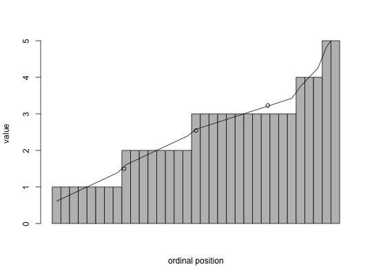
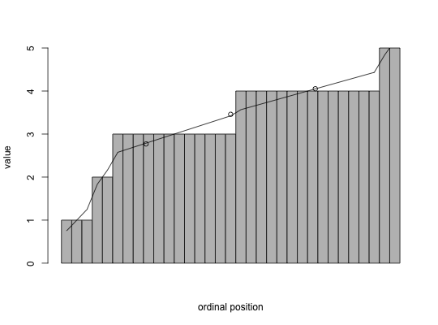

For data with a limited number of response categories (e.g., attitude items), it is useful treat each response category as range with width, w and linearly interpolate the median, quartiles, or any quantile value within the median response.
interp.median(x, w = 1,na.rm=TRUE) interp.quantiles(x, q = .5, w = 1,na.rm=TRUE) interp.quartiles(x,w=1,na.rm=TRUE) interp.boxplot(x,w=1,na.rm=TRUE) interp.values(x,w=1,na.rm=TRUE) interp.qplot.by(y,x,w=1,na.rm=TRUE,xlab="group",ylab="dependent", ylim=NULL,arrow.len=.05,typ="b",add=FALSE,...)
| x | input vector |
|---|---|
| q | quantile to estimate ( 0 < q < 1 |
| w | category width |
| y | input vector for interp.qplot.by |
| na.rm | should missing values be removed |
| xlab | x label |
| ylab | Y label |
| ylim | limits for the y axis |
| arrow.len | length of arrow in interp.qplot.by |
| typ | plot type in interp.qplot.by |
| add | add the plot or not |
| ... | additional parameters to plotting function |
If the total number of responses is N, with median, M, and the number of responses at the median value, Nm >1, and Nb= the number of responses less than the median, then with the assumption that the responses are distributed uniformly within the category, the interpolated median is M - .5w + w*(N/2 - Nb)/Nm.
The generalization to 1st, 2nd and 3rd quartiles as well as the general quantiles is straightforward.
A somewhat different generalization allows for graphic presentation of the difference between interpolated and non-interpolated points. This uses the interp.values function.
If the input is a matrix or data frame, quantiles are reported for each variable.
interpolated median(quantile)
interpolated values for all data points
median
interp.median(c(1,2,3,3,3)) # compare with median = 3#> [1] 2.666667interp.median(c(1,2,2,5))#> [1] 2interp.quantiles(c(1,2,2,5),.25) x <- sample(10,100,TRUE) interp.quartiles(x)#> Q1 Median Q3 #> 3.318182 5.772727 7.666667# x <- c(1,1,2,2,2,3,3,3,3,4,5,1,1,1,2,2,3,3,3,3,4,5,1,1,1,2,2,3,3,3,3,4,2) y <- c(1,2,3,3,3,3,4,4,4,4,4,1,2,3,3,3,3,4,4,4,4,5,1,5,3,3,3,3,4,4,4,4,4) x <- x[order(x)] #sort the data by ascending order to make it clearer y <- y[order(y)] xv <- interp.values(x) yv <- interp.values(y) barplot(x,space=0,xlab="ordinal position",ylab="value")lines(1:length(x)-.5,xv)points(c(length(x)/4,length(x)/2,3*length(x)/4),interp.quartiles(x))barplot(y,space=0,xlab="ordinal position",ylab="value")lines(1:length(y)-.5,yv)points(c(length(y)/4,length(y)/2,3*length(y)/4),interp.quartiles(y))data(galton) interp.median(galton)#> parent child #> [1,] 68.32877 68.18333interp.qplot.by(galton$child,galton$parent,ylab="child height" ,xlab="Mid parent height")